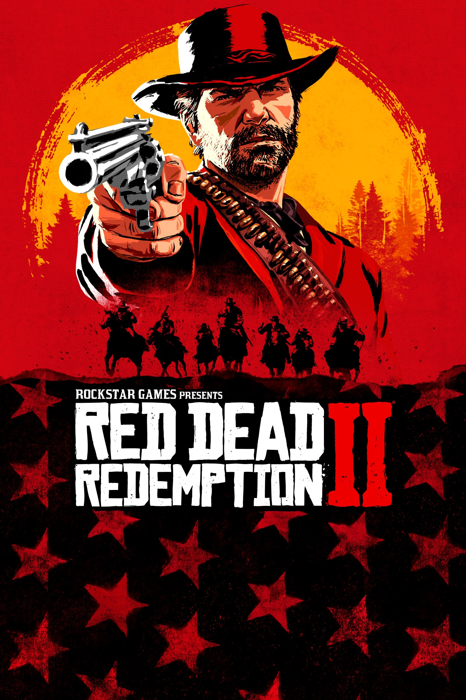

Red dead redemtion 2
Acerca de:
Red Dead Redemption 2 es un videojuego de acción-aventura de mundo abierto ambientado en un vasto y evocador escenario del
Lejano Oeste estadounidense. Es una precuela del aclamado Red Dead Redemption de 2010 y sigue la historia de Arthur Morgan,
un miembro de la banda de forajidos de Van der Linde, mientras intentan sobrevivir en un mundo que rápidamente se está modernizando
y donde la era de los vaqueros y pistoleros está llegando a su fin. El juego es conocido por su increíble detalle, su profunda narrativa
y su impresionante realismo.
Historia y Ambientación
La trama de Red Dead Redemption 2 comienza en 1899, doce años antes de los eventos del primer juego. Tras un atraco fallido en el pueblo de Blackwater, la banda de Van der Linde, liderada por el carismático y manipulador Dutch van der Linde, se ve obligada a huir a través de los salvajes y gélidos Grizzlies. El jugador asume el papel de Arthur Morgan, el brazo derecho de Dutch, quien debe luchar por la supervivencia de la banda mientras son perseguidos por agentes federales y los mejores cazarrecompensas de la nación. A lo largo de la aventura, Arthur se enfrenta a dilemas morales sobre su lealtad a Dutch, su propio código de honor y el destino de sus compañeros forajidos.
La ambientación tropical contrasta fuertemente con la brutalidad de la invasión zombi, creando una atmósfera única que combina la belleza natural con el horror y la desesperación.
Jugabilidad:
Red Dead Redemption 2 ofrece una experiencia de mundo abierto profundamente inmersiva y compleja:
- Modificación y Reparación de Armas: Una característica distintiva es la posibilidad de reparar y mejorar las armas encontradas. Se pueden añadir elementos como clavos, electricidad o ácido para aumentar su daño o añadir efectos elementales.
- Elementos RPG: Los cuatro personajes jugables (Logan, Purna, Sam B y Xian Mei) pertenecen a diferentes clases (experto en armas arrojadizas, de fuego, contundentes y afiladas, respectivamente). Cada uno tiene su propio árbol de habilidades que permite a los jugadores personalizar su estilo de juego, mejorando el daño, la resistencia o desbloqueando nuevas habilidades.
- Mundo Abierto y Misiones: La isla de Banoi es un mundo abierto que se va desbloqueando progresivamente. Hay misiones principales que avanzan la historia y numerosas misiones secundarias que recompensan con experiencia, dinero y equipo.